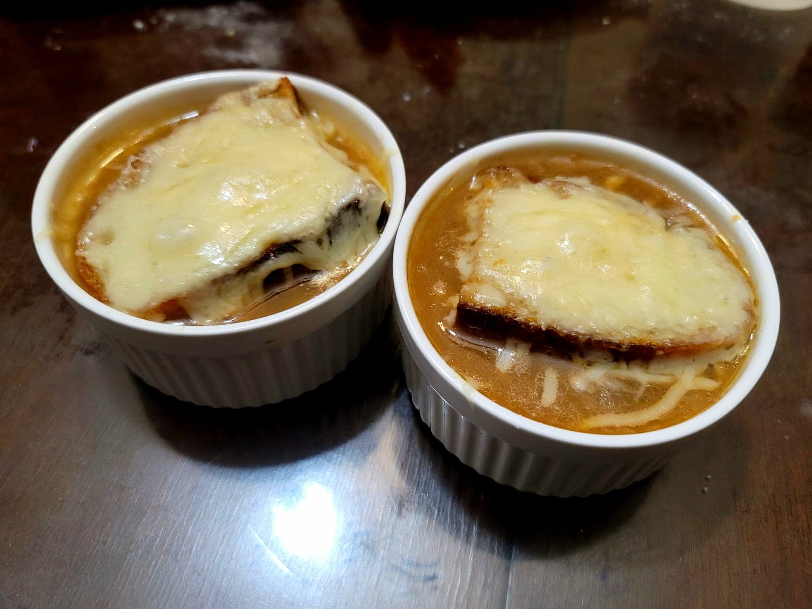

Soupe à l'Oignon Gratinée (French Onion Soup)

Ingredients:
French Onion Soup:
- 2 lb Yellow onions, sliced
- 2 tbsp Butter + more if needed
- 1 tbsp Vegetable oil
- 1 tsp Salt
- 1/2 tsp Sugar
- 3 cloves Garlic, minced
- 3 tbsp Flour
- 6 cups Beef broth
- 1/2 cup White wine
- 2 Bay leaves
- 1/2 Yellow onion, grated
- 1-4 oz Gruyère cheese, grated
- Salt, to taste
- Black pepper, to taste
Croutes:
- 8~ slices French bread, 1 inch thick slices
- 4 tbsp Olive oil
- 8-12 oz Gruyère cheese, grated
- 4 oz Parmesan cheese, grated
Instructions:
- Heat the butter and oil in a large pot over medium-low heat. Add in the onions and toss to completely coat in oil. Cover and let cook for about 20 minutes or until the onions are tender.
- Remove the cover and raise the heat to medium-high. Add the sugar and salt and sauté until the onions are caramelized, about another 10-20 minutes, stirring constantly to not burn.
- Once caramelized, add in the garlic and sauté another 1-2 minutes. Then reduce the heat to medium-low and stir in the flour. If it does not form a paste, add in more butter. Brown the flour for about 2-3 minutes, stirring constantly to not burn it.
- Slowly stir in the beef broth in small increments to prevent any lumps. Then add in the wine. Cover and bring to a simmer. Cook over low for 30 minutes. Then add in the bay leaves, grated onion, and cheese and cook for another 30 minutes.
- Preheat an oven to 325 degrees Fahrenheit.
- For the croutes, brush the bread slices on both sides with olive oil. Let toast in the oven for about 15 minutes per side. Then remove from the oven to let cool.
- Taste the soup and adjust salt and pepper to taste. Transfer the soup to single serving ramekins/oven-safe bowls. Top each ramekin with a croute and then with the cheeses. (Alternatively transfer it all to a large baking dish and top with the croutes and cheese.) Place into a broiler and broil just enough for the cheese to completely melt.
- Serve immediately.